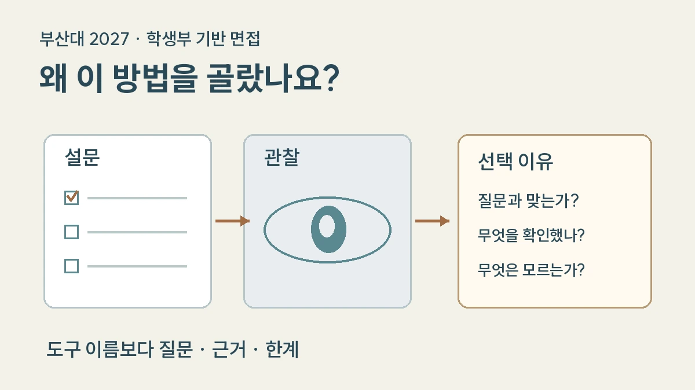

부산대 2027 학생부 면접, 왜 그 탐구 방법을 골랐는지 설명할 수 있나요?
부산·양산·밀양캠퍼스 일반 모집단위의 학생부 기반 면접을 기준으로, 탐구의 자료·방법 선택 이유와 한계를 설명하는 연습을 담았습니다. 의예과·연제캠퍼스 예외, 12월 1일 세부공지와 12월 5일 면접도 구분합니다.
탐구 주제를 고른 이유와 탐구 방법을 고른 이유는 다릅니다. “관심 있는 분야라 조사했다”는 말 다음에, 왜 그 자료·측정 기준·비교 대상을 선택했는지 설명해 보세요. 이번 글은 부산대 2027학년도 학생부종합 면접을 준비하는 수험생이 학생부 속 실제 탐구 한 건을 되짚도록 만든 실전 해설입니다. 선택 이유를 묻는 질문이 반드시 출제된다거나, 아래 답변 순서가 대학의 채점표라는 뜻은 아닙니다.

1. 오늘의 새 발표가 아니라, 현재 모집요강으로 준비 범위를 정합니다
확인일은 2026년 11월 25일입니다. 부산대 입학처의 현재 수시모집요강 메뉴가 연결하는 부산·양산·밀양캠퍼스 PDF와, 2026년 9월 3일 게시된 면접고사 사전공지를 대조했습니다. 검색에 남아 있는 이전 PDF만 보지 말고, 모집요강 메뉴에서 지원 캠퍼스에 맞는 자료를 여는 것이 출발점입니다.[1][6]
이 글의 중심 대상은 부산·양산·밀양캠퍼스의 학생부종합전형·지역인재전형I 가운데 의예과를 제외한 면접 실시 모집단위입니다. 현재 모집요강 인쇄 65쪽(PDF 67쪽)은 일반 모집단위의 학생부 기반 면접을 10분 내외로 안내하며, 탐구역량과 사회역량을 평가합니다. 간호대학·약학대학·치과대학 해당 모집단위도 이 일반 면접 안내에 포함됩니다.[2]
의예과는 별도입니다. 학생부 기반 면접 외에 공통문제 답변 준비와 면접이 추가됩니다. 연제캠퍼스 초등교육학부도 이 글의 시간·방법을 적용하면 안 됩니다. 연제캠퍼스는 별도 모집요강에서 제시문 기반 조별 면접을 안내합니다. 자신의 원서에 적힌 전형과 모집단위를 먼저 확인하세요.[2][9]
2. 탐구역량은 ‘멋진 도구를 썼다’는 설명으로 끝나지 않습니다
현재 모집요강의 면접 평가기준에는 관심 분야 관련 교과 이수 노력과 자기주도적 학업역량, 학업태도 및 탐구 능력, 자기계발 노력 등이 제시되어 있습니다. 같은 모집요강 인쇄 63쪽의 학업역량 40%·탐구역량 40%·사회역량 20%는 서류평가 영역별 비율입니다. 이를 면접 답변 시간 배분이나 면접 영역별 배점으로 바꾸어 읽어서는 안 됩니다.[2]
부산대 학생부위주전형 가이드북 인쇄 40~41쪽(PDF 21쪽)은 기록된 경험의 과정과 의미, 배운 점과 이후 변화를 자신의 언어로 설명하도록 안내합니다. 인쇄 44쪽(PDF 23쪽)의 면접 FAQ 역시 학생부 문장을 전부 외우는 것보다 활동을 이해하고 설명하는 준비를 강조합니다. 이 가이드북에는 통합 모집요강 이전의 전형명도 남아 있으므로, 전형명·일정은 현재 모집요강과 사전공지를 기준으로, 가이드북은 준비 설명의 보조 자료로 나누어 읽었습니다.[5][2][6]
여기서 편집팀이 제안하는 연습은 간단합니다. 보고서의 ‘방법’ 문단에서 선택 하나를 골라 질문에 맞았던 이유와 그 선택 때문에 생긴 한계를 함께 설명해 보세요. 설문, 관찰, 문헌 비교, 실험, 데이터 분석 중 어느 도구가 무조건 우수하다는 전제는 두지 않습니다. 학생부에 없는 고급 분석이나 실제 하지 않은 과정을 추가하지도 않습니다.
3. 교육용 가상 사례: 설문을 선택한 이유를 어떻게 고칠까?
아래는 편집팀이 만든 교육용 가상 사례이며, 실제 학생의 활동·조사 결과나 부산대 기출·모범답안이 아닙니다. 학생부에 ‘학교 도서관 이용의 불편을 설문으로 탐구했다’는 활동이 있다고 가정합니다. 이 연습의 목적은 설문 결과를 꾸미는 것이 아니라 조사 방법이 원래 질문에 맞았는지 설명하는 것입니다.
수정 전 “도서관에 관심이 있어서 설문을 했습니다. 응답을 그래프로 만들었고, 이용시간을 늘려야 한다고 결론 냈습니다.”
이 답변에는 관심의 계기와 도구 이름만 있습니다. 이용시간을 묻는 설문을 왜 골랐는지, 실제 이용자가 아닌 친구의 의견도 섞였는지, 그 응답으로 운영시간 연장까지 판단할 수 있는지는 보이지 않습니다.
수정 후의 설명 예시 “처음 질문은 학생들이 도서관에서 어떤 불편을 겪는지였습니다. 이용 횟수만 세면 불편의 이유를 알기 어려워 설문을 골랐습니다. 최근 이용 경험이 있는지 먼저 묻고, 이용시간과 좌석 문제를 구분해 답하도록 구성했습니다. 다만 제 주변에서 모집한 응답이어서 전체 학생의 의견이라고 말할 수는 없습니다. 운영시간 연장을 제안하려면 실제 시간대별 이용 상황과 운영 여건도 더 확인해야 합니다.”
실제 연습에서는 정말 했던 절차만 남겨야 합니다. 최근 이용 여부를 묻지 않았다면 이 예시를 자신의 활동인 것처럼 외우지 마세요. “당시에는 그 구분을 하지 못해 이용 경험에 따른 차이를 확인할 수 없었다”라고 설명하고, 다음 조사에서의 개선안과 이미 수행한 방법을 분리하는 편이 정확합니다. 이것이 감점 방지나 가산점을 보장한다는 뜻은 아닙니다.
이어 해 볼 질문도 편집팀의 연습용입니다. “관찰로는 무엇을 더 확인할 수 있나요?”, “응답자가 달라져도 같은 결론일까요?”, “지금 자료로 말할 수 없는 것은 무엇인가요?”를 하나씩 묻고, 모르는 부분을 추측으로 메우지 않는지 확인하세요. 모든 답에 긴 배경 설명을 붙이기보다, 실제 받은 질문에 맞는 선택 이유 하나를 먼저 말해 보세요.
4. 오늘 만들 산출물: 다섯 줄 ‘선택 이유 메모’
학생부에서 본인이 과정을 설명할 수 있는 탐구 한 건을 고르고, 기존 보고서·발표자료를 찾아 다음 다섯 줄을 적어 보세요. 자료를 찾지 못한 부분은 기억이 불확실하다고 표시합니다. 이 메모는 개인 연습용이며 대학의 제출 서식이 아닙니다.
- 질문: 내가 확인하려던 대상·현상은 무엇이었나?
- 선택: 어떤 자료·방법·비교 기준을 실제 사용했나?
- 이유: 다른 방법과 비교해 그 선택이 질문에 맞았던 이유는 무엇인가?
- 확인 범위: 실제 관찰·분석한 내용과 내 해석은 각각 무엇인가?
- 한계와 다음 확인: 이 자료로 말할 수 없는 점은 무엇이며, 후속 확인은 아직 계획인가?
처음 보고서에 없던 선택 이유가 뒤늦게 떠올랐다면, 당시 판단과 지금의 성찰을 구분해 적으세요. “그때 그렇게 생각했다”와 “지금 돌아보면 이렇게 바꾸겠다”는 서로 다른 설명입니다. 탐구보고서·세특을 복기한다는 것은 기록을 더 화려하게 다시 만드는 일이 아니라, 남아 있는 기록과 자신의 설명이 맞는지 점검하는 일입니다.
5. 면접 준비와 별도로, 12월 1일 공지를 다시 확인합니다
현재 모집요강 인쇄 36쪽(PDF 38쪽)의 1단계 합격자 발표 예정은 2026년 12월 1일 화요일 16:00이며, 인쇄 65쪽은 같은 시각 입학홈페이지에 면접 시간·장소·유의사항을 공지한다고 안내합니다. 면접일은 2026년 12월 5일 토요일입니다. 글 확인일인 11월 25일에 개인별 배정이 이미 공개되었다는 뜻은 아닙니다.[2]
9월 3일 사전공지 기준으로 일반 모집단위는 12:30까지 입실, 13:00부터 면접 시작이고 의예과는 08:00까지 입실, 09:00부터 시작입니다. ‘시작 시각’에 맞춰 도착하는 것으로 읽지 마세요. 세부 대상·대기장소·유의사항은 12월 1일 16:00 예정 공지에서 다시 확인해야 하며, 사전공지는 일정이 변경될 수 있음을 명시합니다.[6]
모집요강은 수험표와 인정 신분증 지참, 교복 착용 금지, 성명·수험번호·출신고교·부모직업·지역 등 학생부 기재 금지사항에 관한 발언 금지를 안내합니다. 연습 답변에서도 개인 식별정보 대신 활동의 질문·과정·선택 근거가 들리는지 점검하세요. 실제 지참물과 운영 절차는 새로 게시될 본인 대상 유의사항을 마지막으로 확인해야 합니다.[2]
6. 확인 범위와 관련 가이드
11월 25일 확인 당시 입학처 공지사항 첫 화면과 별도 후속 게시물을 살펴보았습니다. 확인한 11월 24일 논술고사 장소·유의사항 및 실기·실적 결과 공지는 이 학생부종합 면접의 최종 개인별 안내를 대신하지 않습니다. 모든 게시판·개인별 안내를 확인했다는 뜻은 아니며, 다음 확인 시점은 12월 1일 16:00 공지 예정 시각 이후입니다. 그 전에도 입학처에서 변경 공지를 확인하세요.[8][2]
기존 서류 기반 면접 준비 가이드는 학생부 전체의 복기 순서를, 꼬리질문 점검표는 답변 뒤 추가 확인을 다룹니다. 이번 글은 그중 탐구 방법과 자료를 선택한 이유 한 가지를 부산대 해당 전형의 공식 평가·일정과 연결했습니다.
답변 예시와 메모는 편집팀의 교육용 제안이며 대학의 공식 문항·평가 공식이 아닙니다. 합격이나 점수를 보장하지 않으며 별도의 사람 검토·대학 감수를 거치지 않았습니다.
공식 출처
본문의 번호는 확인한 공식 자료로 연결됩니다. 대학의 문항·도표·PDF를 이 글에 재게시하지 않았습니다. 모집요강 쪽수는 인쇄 쪽수와 PDF 파일상의 쪽수를 함께 표시했습니다.
- [1] 부산대 수시모집요강 현재 메뉴
- [2] 2027 수시모집요강: 부산·양산·밀양 (인쇄 35·36·63·65쪽)
- [5] 2027 학생부위주전형 가이드북 (인쇄 40·41·44쪽)
- [6] 2026년 9월 3일 학생부종합 면접고사 사전공지
- [8] 부산대 입학처 공지사항
- [9] 2027 수시모집요강: 연제캠퍼스 (별도 전형)
이 칼럼은 운영자의 관점과 일반 교육 정보를 담고 있으며 특정 대학 합격이나 평가 결과를 보장하지 않습니다.
함께 볼 글

학생부 기반 면접 준비: 영역별 활동 복기와 꼬리질문·STAR·PREPNEW
세특·창체·공동체 활동을 동기·과정·결과·성찰로 정리하고 실제 기여와 한계를 설명하는 서류 기반 면접 연습법입니다.

학생부 기반 대입 면접 꼬리질문 점검표: 주장·근거·한계 연결하기NEW
보고서의 핵심 주장에 조건과 반대 질문을 붙여, 근거를 찾을 수 있는 답변과 아직 확인하지 못한 답변을 구분합니다.